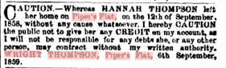
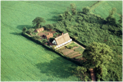

What I think!

![Jane Thompson’s death certificate says her father was unknown but also says that he was a farmer at Piper’s Flat. This seems to indicate that Jane did not know her father well or had did not acknowledge him.
Wright Thompson Initially applied to emigrate to America on February 24th 1837 but declined because he could not pay the passage. He then applied to emigrate to Australia as he would not have to pay his passage. He was accepted and Wright Thompson and his family came out to Australia aboard the ‘City of Edinburgh’ arriving on the 31st August 1837. The website Emigration : Why Leave England? puts Wright and his families departure in an historical context.
He then took his family to Piper’s Flat near Wallerawang where he took up land. The area would have been very remote as the first squatter had arrived only in 1824 and the first school did not open in Wallerawang until 1860. There is still a creek named Thompson’s Creek in the area of Piper’s Flat today and a road named Thompson’s Creek Road at Blackman’s Flat.
Wright had been involved in agriculture in Norfolk, England and presumably his skills were useful in his new enterprise.
In the year that Jane turned 13 her father placed the following ad in the personal column of the Sydney Morning Herald:
I have the following note from an old relative.
Note from Uncle Tom to Wright (Barney) :At death Wright was an inn keeper at Running Stream, a small village on the Mudgee rail line north of Capertee. Wright also ran an inn on a river bank one mile out of Wallarawang along the railway line. This creek known as Thompson Creek.
The following offer was placed in the SMH on the 27th August 1862 and indicates that Wright Thompson’s inn was the Forest Inn, Mudgee Road, Blackman’s Flat.
He died at Blackman’s Flat so presumably this was his only pub. There was an inquest into his death but it found insufficient evidence to give cause of death.](Wright_Thompson_files/shapeimage_2.png)
Culpit’s Farm (now known as Turnpike Cottage) where
Wright Thompson was born. Photo by Robert Thompson


To The Poor Law Commissioners
At their office
Somerset House
London
Received 28 Feb 1837
“Feb 24th 1837
Most Honorable Gentlemen, I the under mentioned petitioner do most humbly petition to you Honorable Commissioners and do pray of you to assist me in how I am to proceed in respect to emigrate to America as my parish will not give me an answer and I do very much wish for a passage to the British settlements in North America and I have a large family and am quiet unable to support them in this country. Neither am I able to provide myself with a passage so I humbly pray of you Honorable commissioners to favour me with your advice and
I am your obedient humble servant
Wright Thompson
Carleton Forehoe Norfolk in the Hundred of Forehoe”
To the Poor Law Commissioners at
Their Offices
Somerset House
London
Received 13 April 1837
“April 1837
Most Honorable Gentlemen, I the under mentioned petitioner -----more take the liberty of most humbly petition the most honorable commissioners and do pray of you to assist me in how I am to proceed in respect of …. Although I have declined going to North America I have not declined emigrating if I can ----some assistance I have the opportunity ------------- to Australia as my parish have giving me -----testimonials to the Honorable Company but will not advance on my passage the required ----- for me and my wife and four children which is £16 ------------- to the aid of the colonial government. The Honorable Company has giving me the opportunity paying £6 out in my earnings after I arrive in ------ colony as I have not means of paying any part of the --------- I humbly beg of you Honorable Commissioners to do all you can for me as time is getting away and I have not had anything to --------for some time and if I can not have a passage I must leave my family to the mercy of you honorable gentlemen. But I humble pray of you to favour me with your advice and let me know whether I can have any assistance let me have an answer as soon as you possible can as the ship sail the last day in this month.
I am your obedient humble servant
Wright Thompson
Carleton Forehoe near Wymondham Norfolk
Please gentlemen favour me with an answer”


What you should know
Wright Thompson was born on the 4th June 1807 at Culpit’s Farm Carleton Forehoe, Norfolk, England. His father was John Thompson (1781-1857) and his mother Elizabeth Culpit (1787- ). They married in St. Mary’s Church, Carleton Forehoe on the 10 January 1807 and then went to live with Elizabeth’s parents at Culpit’s Farm.His grandfather and grandmother Samuel Culpit and Elizabeth were tenant farmers on the estate of Lord Kimberley and leased 9 acres from him between 1770 and 1790. After their marriage Wright and Hannah lived with his mother and father, grandmother and sister Harriet at Culpit’s farm. Wright Thompson married Hannah Cudbold in Barford, Norfolk on the 20th February 1831. By the time they emigrated they had 4 children, the youngest only 6 months old.

Culpit’s Farm, Norfolk, England
His grandmother’s name was Jane Wright and this is where he gained his Christian name. Wright was listed as a shepherd and farmhand when he married and also when he came to Australia.
At Blackman’s Flat he was a farmer and also an innkeeper. He owned the Forest Inn at Blackman’s Flat. There would have been plenty of custom as Blackman’s Flat was on the way from Sydney to the goldfields around Gulgong.
He died at Blackman’s Flat on the 3rd June 1868. He is buried in Wallerawang.